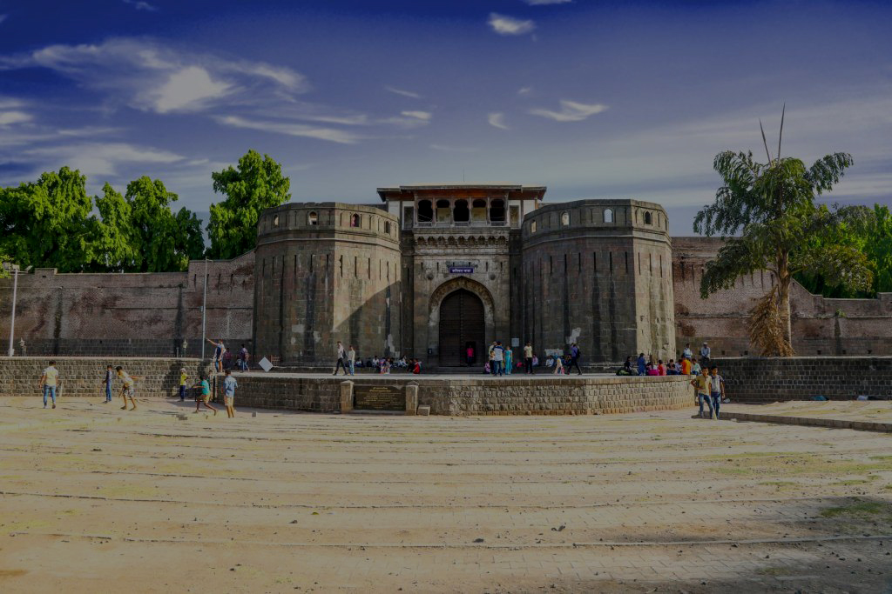
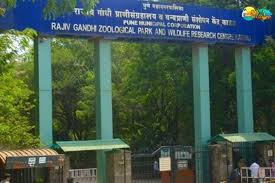

Shaniwar Wada
A historic fort built in 1732, once the seat of the Peshwas of the Maratha Empire.
Specialty: Light & Sound Show
View Location
Aga Khan Palace
Built in 1892, this palace played a major role in India’s independence movement.
Specialty: Gandhi Memorial
View Location
Sinhagad Fort
A majestic fort offering breathtaking views and a glimpse into Maratha history.
Specialty: Trekking & Kanda Bhaji
View Location

Rajiv Gandhi Zoological Park
A large zoo featuring diverse wildlife, a snake park, and lush greenery.
Specialty: Snake Park & Wildlife
View Location
Pataleshwar Cave Temple
An 8th-century rock-cut cave temple dedicated to Lord Shiva.
Specialty: Rock-Cut Architecture
View Location